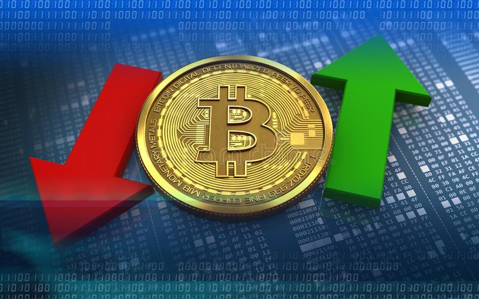

Negative and Positive Effects
img scPositive Effects
Bitcoin has many posistive effects.What are they?
- No Banking fees/taxes There are no banking fees or taxes involved with Bitcoin. This means that there really is not any charge after transactions. This is a posistive because who wants to get charged more... no one.
- Payments are mobileBitcoin can be used on your phone or laptop from wherever you are located. The mobility makes it super easy to look and track what you have on your phone. There is apps created to make it easy for the user.
- Cannot be stolenIt is hard to steal a bitcoin. The only possible way would be to get it stolen would be for a hacker to gain access to the owners digital wallet. Block chains are what make it difficult.
- Freedom with money/no government involvement You can use your money however you want. The government is not involved, therefore they cannot see the transactions that were made.
- Bitcoin is not always accepted everywhere. Bitcoin is usually more of an online purchasing system. It is used opnline for online trading purposes. This makes it very hard for Bitcoin to actually become a widley used currency. All transactions can not be tracked because it is not real money which is a big threat.
- Risk of the unknown Bitcoin system could have flaws and bugs from time to time. As bitcoin is more of a new system, flaws can be found more easily becuase it is an all online currency. Hackers exsit for bad reasons which can cause whole crashes in the bitcoin system.
- "Built in Deflation" The act of deflation has a big impact on the bitcoin. Deflation will bring prices down. Lets say you buy a bitcoin for 5 dollars. The next day the bitcoin you bought for 5 dollars is now worth .50 cents. There is nothing you can do to stop it from doing this.
- Needs Converting There is no physical form of Bitcoin. This means you cannot use it in physical stores. It will always HAVE to be converted into a different currency. There is no real system for this. You will have to convert bitcoin and it will be hard until a universal system is proposed and implementend.
- Value Flucatuation The is no guarantee on a value of a bitcoin. It goes along with built in deflation. There is nothing or no one to govern the bitcoin authority so nothing or no one can guarantee an actual value. If a huge group decides to dump their bitcoins and leave the system, people with bitcoin will suffer because they will not have the same amount of Bitcoin money wise. The value will decrrease by a lot, and no one wants less money then what they once had. sad.
Negative Effects
Bitcoin has many negative effects.What are they?